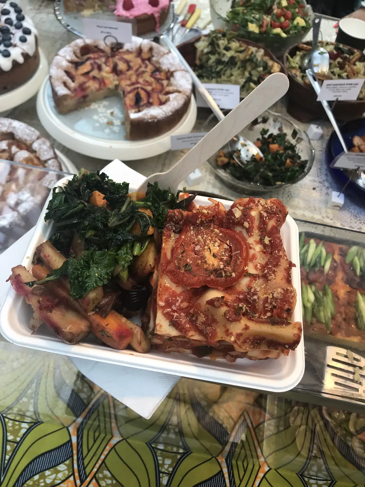
Pick a main
Lasagna, spinach quiche, polenta bake, classic parmigiana or roasted stuffed veg in summer.
Fridays, Saturdays & Sundays
By Kaya, on a table piled high under the glass roof of Greenwich Market. Lasagna, quiches and parmigiana, bowls of colourful salads, and a cake counter worth saving room for.

The table
Every weekend the table fills with 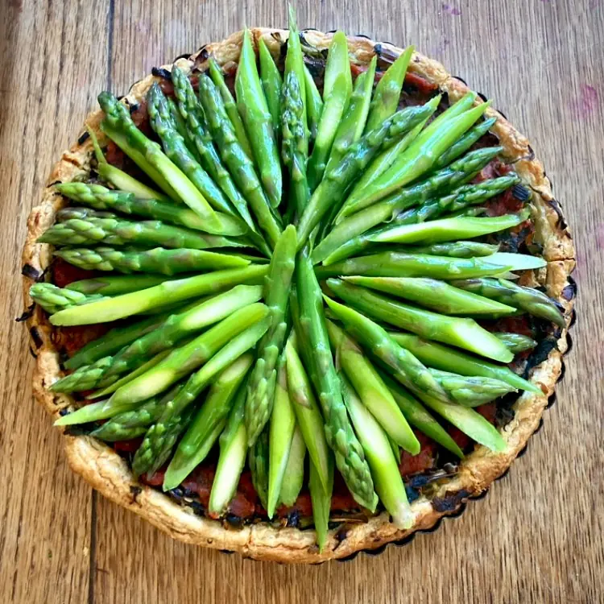 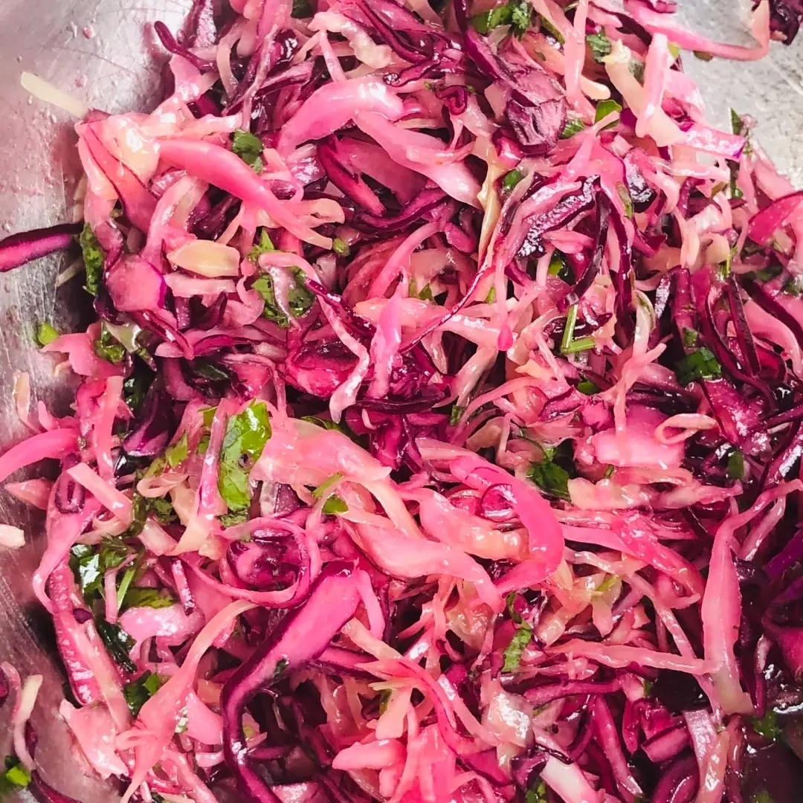 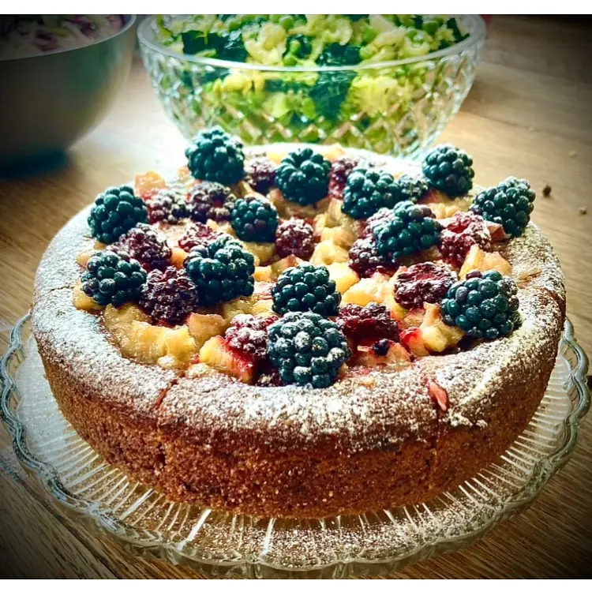 parmigiana and cakes
parmigiana and cakes
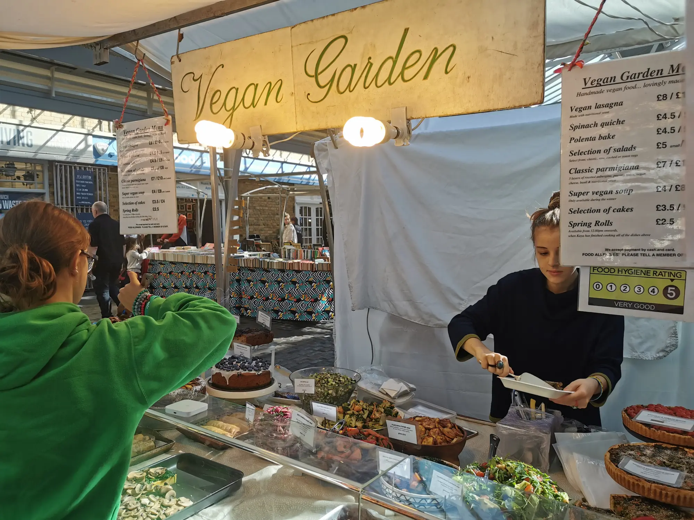
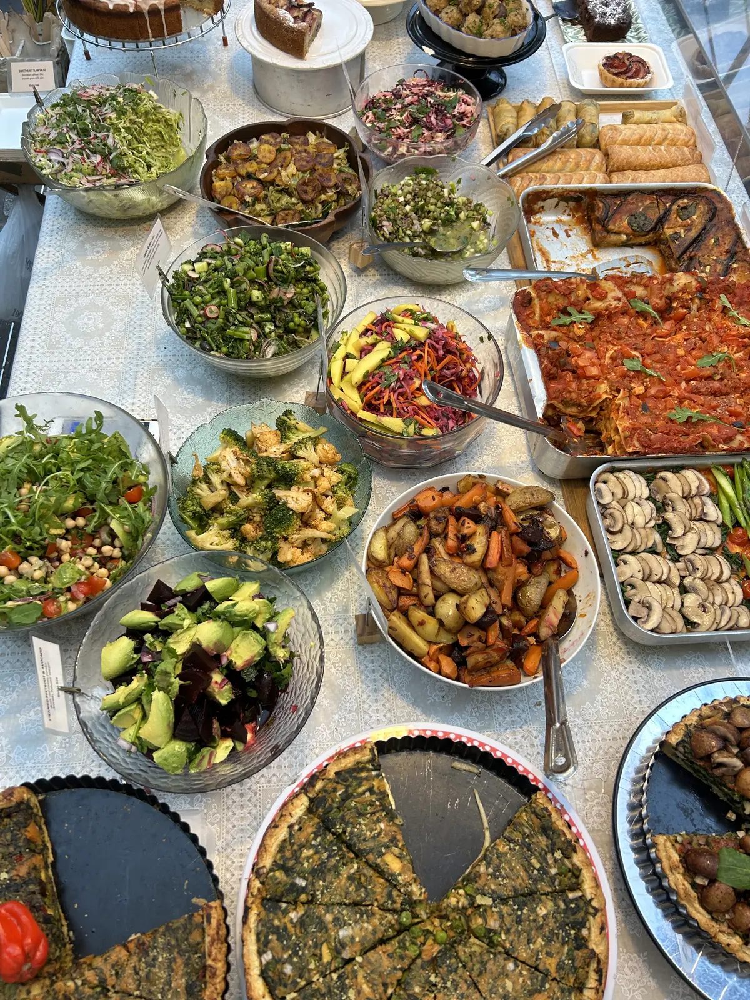
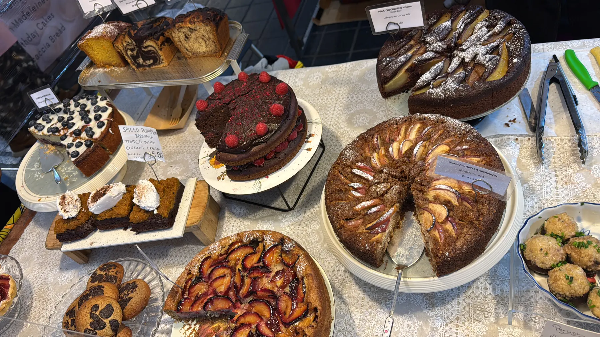

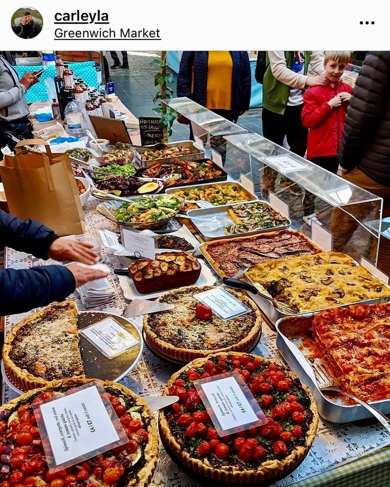
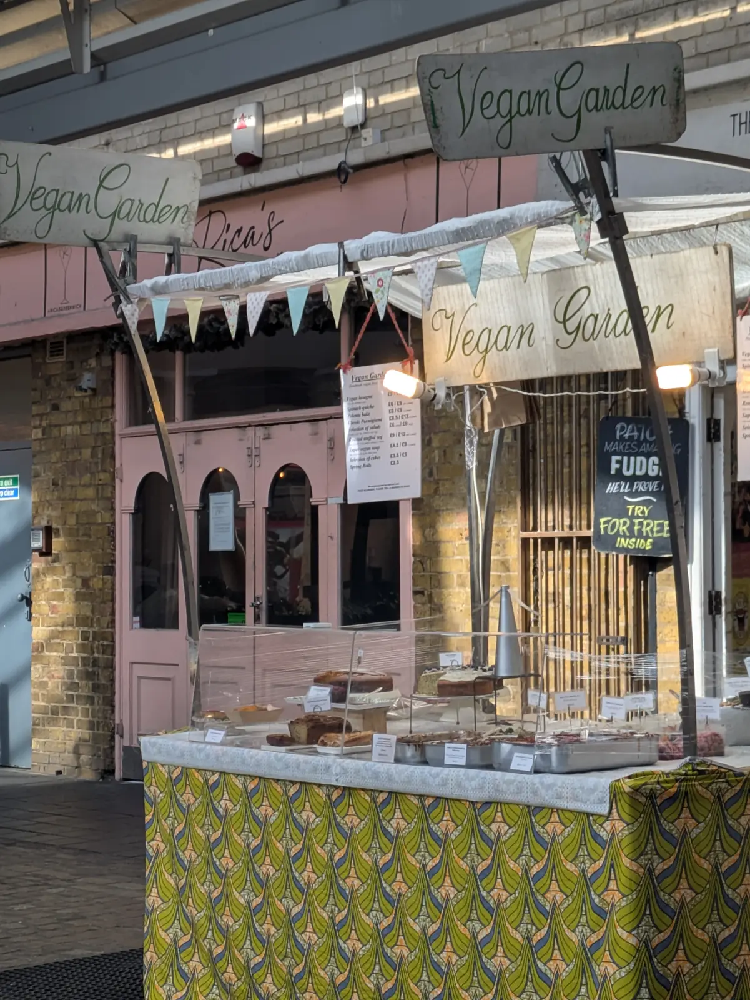
How a box works
Most mains come on their own or with two salads of your choice from the day's bowls, packed into a box you can carry anywhere.

Lasagna, spinach quiche, polenta bake, classic parmigiana or roasted stuffed veg in summer.
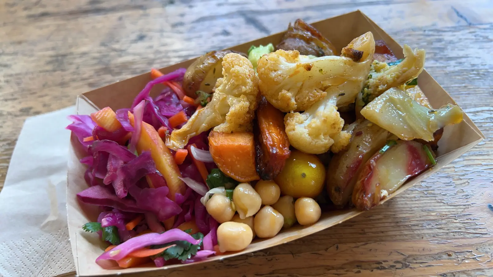
Cold, raw, cooked or roast veg: red cabbage slaw, chickpeas, greens, whatever is on the table that day.

A slice from the counter. Ask about the day's cakes: each one is labelled with its allergens.


The cake counter
Big, generous vegan cakes and fruit tarts, dusted, glazed and piled with fruit. The line-up changes with the week; these have all made an appearance.
Slices £3.5 / £5
“London's best kept vegan secret?”
“Picked up vegan lasagne and salads. So. Freaking. Good.”
“The most divine fresh food with so many options.”
“Yummy, and the most delicious spring roll.”
“Look no further than Vegan Garden London. Thank you Kaya!”

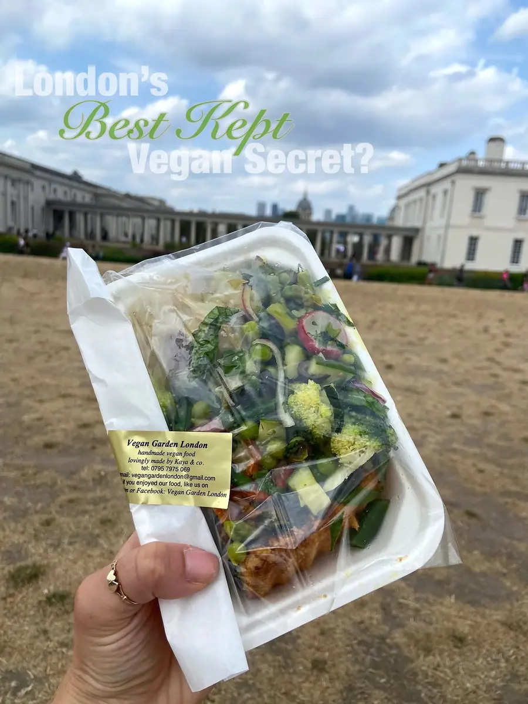

Take it outside
The boxes travel well. Grab lunch at the market, stroll up to the park and spread out on the grass. Our customers' photos say it best.
Plan your visitCome and find us